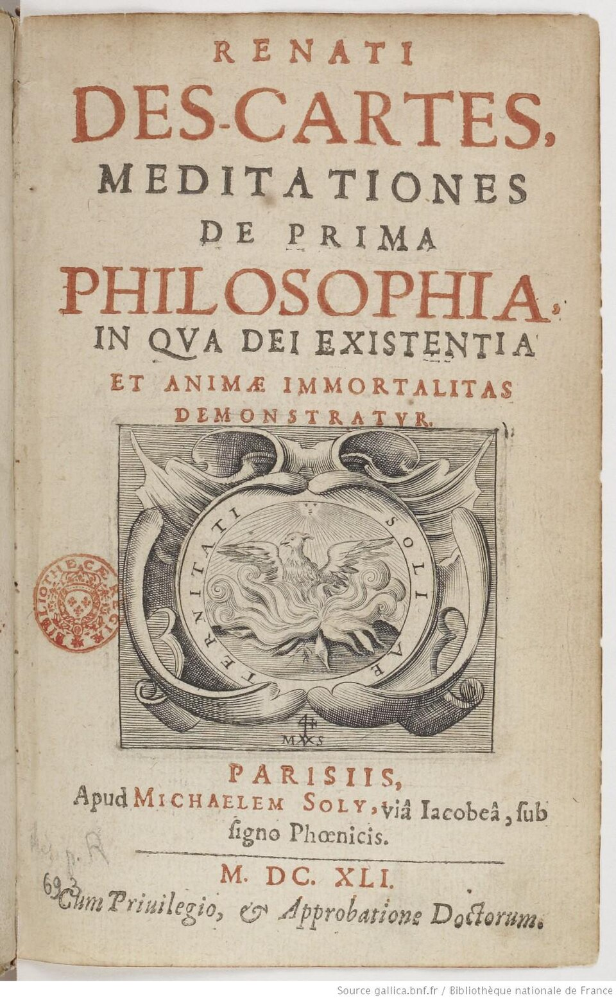

这行字是写给神学院看的，而页面底部把话说得更明白：Cum Privilegio, & Approbatione Doctorum——附国王特许，并经博士们批准。 中间那枚印徽是出版商的凤凰标记（sub signo Phœnicis，"凤凰招牌下"），环绕的字是 Soli Æternitati：唯献给永恒。
一本要把全部旧地基拆掉的书，扉页上写着它是来证明上帝和灵魂不朽的。 顺便说一句：六篇沉思里没有任何一篇在论证灵魂不朽——第六沉思论证的是心灵与身体可以分开，那不是一回事，笛卡尔自己也清楚。 Wikimedia Commons · 公有领域（法国国家图书馆藏）
逐篇导读
论可以引起怀疑的事物
全书最好读、也最常被单独抽出来读的一篇。三级怀疑在这里依次登场：感官错觉 → 梦境论证 → 恶意的精灵。
- 关键动作是"一次性清空"——笛卡尔明确说，逐条检查所有信念是不可能的，所以他改为攻击地基：只要证明那些原则可疑，建在上面的一切自然一起垮。这是工程师的思路，不是怀疑论者的思路。
- 梦境论证的确切范围要看清：它没有杀掉一切。笛卡尔明确指出，即使在梦中，"更简单更普遍的东西"——广延、形状、数量——仍然为真。所以算术与几何在这一级幸存。
- 恶意的精灵是为了补上这个缺口才被请出来的。顺序不能颠倒：先发现梦境论证够不着数学，才需要更强的假设。
论人类心灵的本性：它比物体更为人知
De natura mentis humanae. Quod ipsa sit notior quam corpus.
请先看标题——它已经把这一篇的目标写清楚了，而且不是大众以为的那个目标。
- 第一步，找到那块地面。如果有一个精灵一直在骗我，那么必定有一个"我"在被骗。于是：ego sum, ego existo——每当我说出它、或在心里设想它时，它必然为真。请注意这个限定：它是一个在执行中才为真的命题，不是一条永恒定理。
- 第二步，问这个"我"是什么。答案是那份著名的清单：怀疑、理解、肯定、否定、意愿、不愿，以及想象和感觉。注意最后两项——在笛卡尔这里，感觉也算"思"。他的 cogitatio 涵盖一切意识活动，不是"逻辑推理"。中文"我思"两个字，其实窄化了原意。
- 第三步，蜡块。一块蜡：有形状、气味、硬度、颜色。拿到火边，全变了——形状没了，气味没了，硬了变软了。但它还是那块蜡。那么我认出的"它"是什么？不是感官呈现的任何一项，也不是想象（蜡的可变形状有无穷多种，想象数不过来）。只剩一个可能：纯粹理智的审视。
论上帝及其存在
全书最硬、也最关键的一篇。整栋楼能不能建起来，全看这里。
- 先立规则。从"我在"这一条为什么可靠？因为我对它的知觉极清楚极分明。把这个特征提炼成通用规则：illud omne esse verum quod valde clare et distincte percipio。
- 再用因果原则。凭自然之光显然可知：动力因与完全因中所含的实在性，至少要等同于其结果中所含的实在性。——原因不能比结果更"少"。
- 关键一招：把这条原则用在观念上。笛卡尔区分"观念作为心理事件"（这方面所有观念一样多）与"观念所表象的内容"（realitas objectiva，表象的实在性——这方面差别巨大）。一个无限完满存在者的观念，表象的实在性是最高的。
- 结论：我这个有限、不完满的东西，产生不出这样一个观念。所以它的原因必须是一个真实具备这些完满性的存在者。上帝存在。
论真理与错误
被忽略最多的一篇，其实是全书最有现实用处的一篇。它要回答一个尴尬问题：如果上帝是完满的、不骗人的，我为什么还会犯错？
- 笛卡尔的答案是一个精巧的分工：理智是有限的，意志是无限的。我能理解的东西有边界，但我肯定或否定的能力没有边界。
- 错误就产生在这个落差里：当我在理智尚未清楚分明地把握某件事时，就用意志去下了判断。错不在上帝，在我越界使用了自己的自由。
- 由此得出一条完全可以拿来用的行为准则：只对你清楚分明理解的东西下判断；其余的，悬置。
论物质性东西的本质；再论上帝存在
- 先立物质的本质：广延。而且笛卡尔指出，几何对象的性质是我发现的而不是我发明的——三角形内角和是两直角，这不取决于我怎么想。这里有一个强柏拉图主义的味道：真观念有它自己的本性。
- 再来第二个上帝证明，路数完全不同。第三沉思是后验的（从"我心中有这个观念"这个事实出发追溯原因）；第五沉思是先验的——纯粹从概念分析出发：
…non magis repugnet cogitare Deum (hoc est ens summe perfectum) cui desit existentia… quam cogitare montem cui desit vallis. 设想一个缺乏存在的上帝（即至上完满的存在者），其自相矛盾的程度，不亚于设想一座没有山谷的山。 Meditationes V，1641（拉丁通行本 / AT VII）
论物质性东西的存在；论心灵与身体的实在区分
收网的一篇。三件大事同时发生，而这三件事定义了此后三百年的哲学地形：
- 一、赎回外部世界。我有一种强烈的自然倾向去相信物体存在；如果这个倾向是假的，上帝就是骗子；上帝不骗人；所以物体存在。注意这个论证的形状：它不是证据，是担保。
- 二、心身实在区分。我能清楚分明地理解心灵而不涉及身体，也能反过来；凡能被清楚分明地分开理解的，上帝就能把它们分开造出来；所以它们是两个实在不同的东西。这一步之前，二元论并没有被证明——尽管几乎所有人都以为它在第二沉思就完成了。
- 三、把感觉降级。这是全书最被低估的一手：感觉的职能不是告诉你事物本身是什么样，而是告诉你什么对身体有利、什么有害。于是颜色、气味、冷热被赶出了"世界的属性"，重新归类为"身体的信号"。
他把最狠的攻击印在自己书后面
1641 年初版随书刊出六组反驳与答辩；1642 年第二版又加了第七组。共七组——这一点常被写成"六组"，因为书名沿用了初版的说法。
| 组次 | 作者 | 身份 | 攻击的要害 |
|---|---|---|---|
| 第一组 | Johannes Caterus | 荷兰神学家 | 上帝证明中的"自因"（causa sui）概念是否融贯 |
| 第二组 | 由梅森汇集 | 多位神学家、哲学家联署 | 笛卡尔循环的最初提出；要求他用几何学方式重述论证 |
| 第三组 | Thomas Hobbes | 英国哲学家 | 唯物论：能思考的那个东西，凭什么不能本身是物质的 |
| 第四组 | Antoine Arnauld | 神学家，波尔罗亚尔派 | 笛卡尔循环的经典表述；圣餐变体论的神学难题 |
| 第五组 | Pierre Gassendi | 伊壁鸠鲁主义者、经验论者 | 内省无法确立心灵的非物质性；天赋观念缺乏经验证据 |
| 第六组 | 由梅森汇集 | 另一批哲学家、神学家、几何学家 | 心身如何互动；"思维必须以身体为前提" |
| 第七组 | Pierre Bourdin | 耶稣会士 | 逐句敌意攻击方法本身（1642 年第二版新增） |
三场值得单独看的交锋
思维的东西，凭什么不能是物质的
霍布斯的攻击极简且极硬：从"我在思考"推出"我是一个思维的东西"，这一步偷换了。走路的东西是走路的主体，但"走路的东西"不等于"一个走路"。同样，思维需要一个主体，但那个主体完全可能是物质的——我们无法把思想与能思想的物质分开来设想。
笛卡尔的答辩：他从没在第二沉思断言思维物不是物质的，那要到第六沉思才证明。
那个圆圈
见 核心概念 III。这是全书最著名的一处交锋，也是笛卡尔答得最吃力的一处。值得注意的是阿尔诺的姿态：他是同情笛卡尔的神学家，写这段时用的措辞是"我还有一个疑虑"——最锋利的一刀出自最善意的读者。
"停一停吧，心灵！"
伽森狄是七组里最不客气的一位，通篇用"哦，心灵"（O Mens）称呼笛卡尔，带着明确的嘲讽。他的实质攻击是经验论的：你说你是一个思维的东西，可你怎么知道你不是某种非常精细的物质？你说有天赋观念，证据在哪？
笛卡尔的回应又短又轻蔑——他私下称伽森狄为讨厌的唯物论者。这一组交锋通常被认为是七组里笛卡尔表现最差的一场：他基本没有正面接招。
读完七组反驳，你会得到一个和教科书完全不同的印象：笛卡尔不是一个自信满满地宣布真理的人，而是一个在高强度围攻下不断修补、有时成功有时明显吃力的人。 而这本书之所以到今天还立得住，恰恰是因为他把围攻一起印了出来。